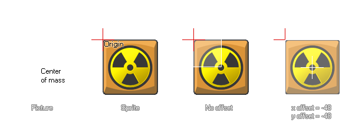

physics_fixture_bind_ext(fixture, target, xoffset, yoffset)
| Streit | Beschreibung |
|---|---|
| fixture | die Leuchte, die gebunden werden soll |
| target | die Zielinstanz, die das Fixture empfangen soll (kann eine Instanz-ID, eine Objekt-ID, eine andere oder alle sein ) |
| xoffset | der Versatz entlang der x-Achse |
| yoffset | der Versatz entlang der y-Achse |
Rückgabe: Echt
Sobald wir unsere Fixture definiert haben, muss sie an eine Instanz gebunden werden. Dies bedeutet, dass seine Eigenschaften auf die ausgewählte Instanz und nicht auf die eigentliche Fixture selbst übertragen werden, sodass eine Fixture an mehrere Instanzen gebunden werden kann, wenn alle die gleichen Eigenschaften haben sollen. Sie können einen Objektindex für das Ziel angeben und alle aktuellen Instanzen im Raum zum Zeitpunkt erhalten wird, dass Vorrichtungen Eigenschaften (aber keine neue Instanzen des Objekts erstellt später), oder Sie die speziellen Schlüsselwörter andere und alle nutzen können. Sie können sogar ein übergeordnetes Objekt angeben, und alle untergeordneten Instanzen mit diesem übergeordneten Element erhalten ebenfalls das Fixture. Sobald das Fixture an alle Instanzen gebunden wurde, die Sie benötigen, kann es gelöscht werden, wenn es nicht mehr benötigt wird, und die Instanzen mit diesen Fixtures-Eigenschaften sind nicht betroffen und behalten diese Eigenschaften bei.
Normalerweise wird die Fixture an die Instanz gebunden, wobei der Massenmittelpunkt am Ursprung der Instanz positioniert wird. Dies ist jedoch nicht immer das, was Sie benötigen. Diese Funktion ermöglicht Ihnen auch, die X- und Y-Position der Fixture zu versetzen gebunden an einen bestimmten Betrag (wenn Sie dies nicht benötigen, dann verwenden Sie physics_fixture_bind stattdessen). Es ist wichtig zu beachten, dass ein Fixture nur einen einzigen Offset unterstützen kann, da das Hinzufügen mehrerer Offsets zu einem einzelnen Fixture von Box2D nicht unterstützt wird.  Die Funktion liefert außerdem einen eindeutigen "id" -Wert für das gebundene Fixture ( nicht das Fixture selbst ), der dann verwendet werden kann, um die Physikeigenschaften aus der Instanz mit der Funktion zu entfernen ("unbind") physics_remove_fixture. Dadurch können Sie physische Eigenschaften zu einer Instanz hinzufügen und daraus entfernen, ohne Objekte zu zerstören oder neu zu erstellen.
Hinweis: Fixtures sollten gelöscht werden, wenn sie nicht mehr benötigt werden, da dies zu einem Speicherverlust führen kann, der das Spiel verlangsamt und schließlich zum Absturz bringt.
var fix, inst;
fix = physics_fixture_create();
physics_fixture_set_circle_shape(fix, 16);
physics_fixture_set_density(fix, 1.0);
inst = instance_create_layer(x, y, "Instances",
genericBodyObject);
my_fix = physics_fixture_bind_ext(fix, inst, sprite_width / 2,
-(sprite_height / 2));
physics_fixture_delete(fix);
Der obige Code erstellt ein Fixture und weist seinen Index der Variablen "fix" zu. Sie definiert dann die Form und die Dichte der Vorrichtung, bevor sie an die Instanz gebunden wird, basierend auf der Breite und Höhe des Sprites. Der Index für die gebundene Fixture wird in der Variablen "my_fix" gespeichert. Schließlich wird die Vorrichtung selbst gelöscht, um Speicherlecks zu verhindern, da sie nicht länger benötigt werden.